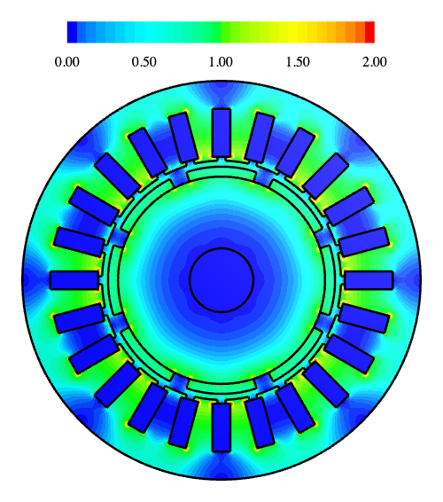
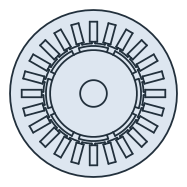
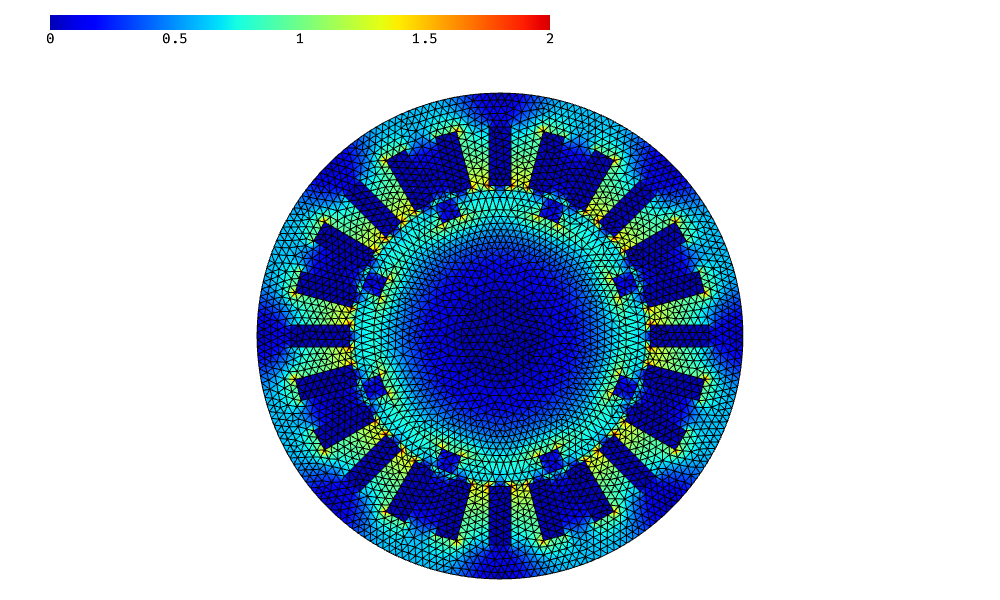
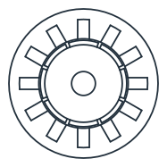
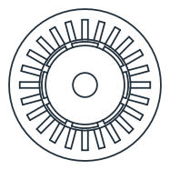
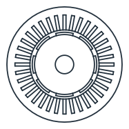
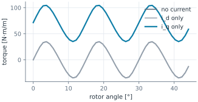
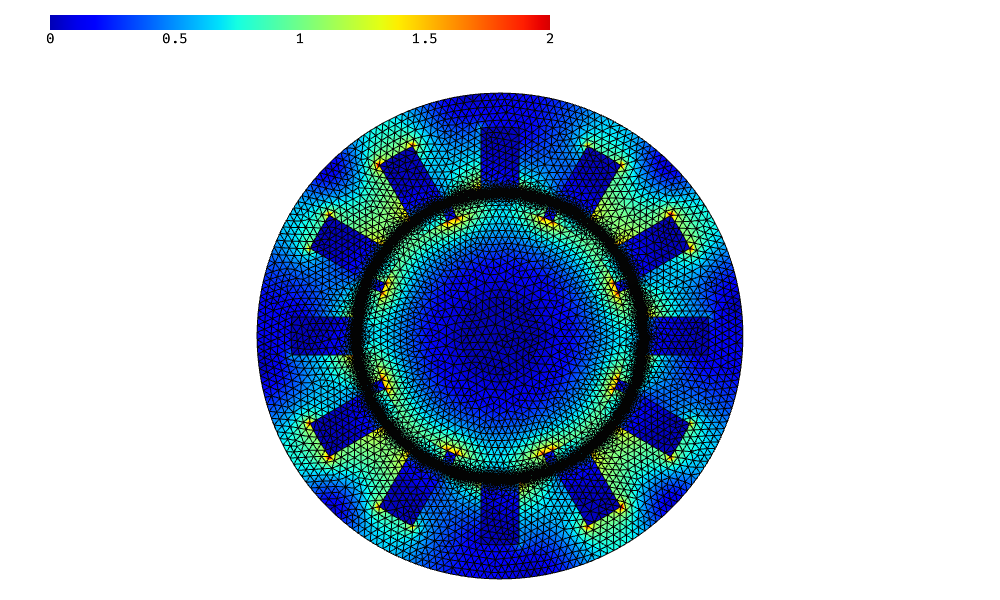

Surface magnet motor: lamination, field and torque
The example is the cross-section of a surface magnet motor, with a stator with 24 slots and a rotor with 8 magnets. Every region is its own face with its own name, glued into a disc of air. Neighbors share their edges, and where parts overlap, the earlier part wins. The air comes last, so it is left only in the gap, the slot openings and the shaft. netgen meshes the regions, and NGSolve computes the open-circuit field in a quick magnetostatic solve. A parametric version of the lamination then gives a 12-slot design, which runs under load: the rotor turns, the three phase currents follow it, and the torque comes from the field in the air gap. Lengths are in mm.

[1]:
import math
import matplotlib.pyplot as plt
import ngsolve as ngs
from ngsolve_webgpu.jupyter import Draw
import planex as px
The dimensions
Parameter |
|
|---|---|
|
The stator’s outer radius, 50, and its bore, 30 |
|
24 slots, 4.5 wide and 12 deep |
|
The slot openings, 2 wide and 1 deep |
|
The rotor’s radius, 26, and the shaft’s, 8 |
|
8 magnets, 2.5 thick, over 80 % of the pole pitch |
|
The magnets’ remanence of 1.2 T and relative permeability of 1.05 |
|
The relative permeability of the iron, 1000 |
[3]:
R_out = 50.0
R_bore = 30.0
slots = 24
slot_w = 4.5
slot_d = 12.0
open_w = 2.0
open_d = 1.0
R_rotor = 26.0
R_shaft = 8.0
poles = 8
h_m = 2.5
arc = 0.8
Br = 1.2
mu_magnet = 1.05
mu_iron = 1000.0
Regions
One slot and its opening are drawn on the x axis and rotated around the center. The magnets are the ring outside the rotor, cut by wedges of 80 % of the pole pitch. The magnets alternate north and south.
[4]:
def disc(r, **props):
return px.QuickSketch().Circle(r, **props).Face()
def turned(face, k, n):
return face.Rotated((0, 0), 360 * k / n)
slot = px.QuickSketch((R_bore + open_d, -slot_w / 2), dir=(1, 0)).Rectangle(slot_d, slot_w).Face()
opening = px.QuickSketch((R_bore - 0.5, -open_w / 2), dir=(1, 0)).Rectangle(open_d + 0.6, open_w).Face()
cuts = [turned(f, k, slots) for k in range(slots) for f in (slot, opening)]
stator = px.Subtract([disc(R_out, name="outer"), disc(R_bore), *cuts])
coils = [turned(slot, k, slots) for k in range(slots)]
rotor = disc(R_rotor) - disc(R_shaft)
ring = disc(R_rotor + h_m) - disc(R_rotor)
half = math.pi / poles * arc
magnets = []
for k in range(poles):
c = 2 * math.pi * k / poles
wedge = px.QuickSketch().Line((40 * math.cos(c - half), 40 * math.sin(c - half)))
wedge = wedge.Line((40 * math.cos(c + half), 40 * math.sin(c + half))).Close().Face()
magnets.append(ring * wedge)
Every region gets its name, and the regions are glued into the disc of air (Figure 1):
[5]:
air = disc(R_out, name="outer")
air.name = "air"
stator.name = "stator"
rotor.name = "rotor"
for c in coils:
c.name = "coil"
for k, m in enumerate(magnets):
m.name = "magnetN" if k % 2 == 0 else "magnetS"
lamination = px.Glue([stator, *coils, rotor, *magnets, air])
print(len(lamination.faces), "faces:", sorted({f.name for f in lamination.faces}))
36 faces: ['air', 'coil', 'magnetN', 'magnetS', 'rotor', 'stator']

Open-circuit field
NGSolve solves for the vector potential A, with A = 0 on the outer boundary. The magnets carry Br radially, with north and south alternating: ∫ ν curl A · curl v = ∫ ν Br · curl v. The picture shows the flux density B.
[7]:
mesh = ngs.Mesh(px.OCCGeometry(lamination).GenerateMesh(maxh=1.5))
mesh.Curve(3)
mu0 = 4e-7 * math.pi
nu = mesh.MaterialCF({"stator": 1 / (mu0 * mu_iron), "rotor": 1 / (mu0 * mu_iron),
"magnetN": 1 / (mu0 * mu_magnet),
"magnetS": 1 / (mu0 * mu_magnet)}, default=1 / mu0)
radial = ngs.CF((ngs.x, ngs.y)) / ngs.sqrt(ngs.x**2 + ngs.y**2)
remanence = mesh.MaterialCF({"magnetN": Br, "magnetS": -Br}, default=0) * radial
def curl(w):
return ngs.CF((ngs.grad(w)[1], -ngs.grad(w)[0]))
fes = ngs.H1(mesh, order=2, dirichlet="outer")
u, v = fes.TnT()
a = ngs.BilinearForm(nu * curl(u) * curl(v) * ngs.dx).Assemble()
f = ngs.LinearForm(nu * remanence * curl(v) * ngs.dx).Assemble()
A = ngs.GridFunction(fes)
A.vec.data = a.mat.Inverse(fes.FreeDofs(), inverse="sparsecholesky") * f.vec
B = curl(A)
Draw(B, mesh, min=0, max=2)

Check
Check: the field in the middle of the air gap, under the middle of a magnet and a tooth, comes close to the magnetic circuit with ideal iron, B = Br h_m / (h_m + μr g), which leaves out the slot openings and the leakage between the magnets:
[8]:
g = R_bore - R_rotor - h_m
r_mid, t = R_bore - g / 2, math.pi / slots
Bx, By = B(mesh(r_mid * math.cos(t), r_mid * math.sin(t)))
print("air gap", round(Bx * math.cos(t) + By * math.sin(t), 3), "T, magnetic circuit",
round(Br * h_m / (h_m + mu_magnet * g), 3), "T")
air gap 0.701 T, magnetic circuit 0.736 T
Parametric study
Next, the whole lamination becomes a function of three parameters: the number of slots, the magnets’ arc and their thickness. Changing a parameter means calling the function again. One slot and one magnet are short sketches from references:
the slot sides run parallel to its axis, from the bore to the slot bottom, with the bottom and the mouth on their circles;
the magnet lies between two rays, on the rotor and on the magnet circle;
a point in the middle of the slot and of the magnet, given with each reference (as in
("bore", middle)), selects the intersections on the correct side of the center;the slot bottom and the magnet top run clockwise (
reverse=True).
Every region gets its name, the rotor and the magnets can be turned by an angle, and the air gap can become a face of its own with a finer mesh, for the solves under load below.
[9]:
def GetGeometry(slots, magnet_arc, magnet_thickness, angle=0.0, gap_maxh=None):
width = 0.5 * 2 * math.pi * R_bore / slots
middle = (R_bore + (open_d + slot_d) / 2, 0)
slot = px.QuickSketch()
slot.Circle(R_bore, id="bore", construction=True)
slot.Circle(R_bore + open_d + slot_d, id="bottom", construction=True)
slot.Move((0, 0)).Line(R_out, id="axis", construction=True)
slot.Move((0, 0), dir=(1, 0)).Line(R_out, parallel="axis", distance=width / 2, id="left side", construction=True)
slot.Move((0, 0), dir=(1, 0)).Line(R_out, parallel="axis", distance=-width / 2, id="right side", construction=True)
slot.Line(("bore", middle), ("bottom", middle), congruent="left side")
slot.Arc(("left side", middle), ("right side", middle), congruent="bottom", reverse=True)
slot.Line(("bottom", middle), ("bore", middle), congruent="right side")
slot.Arc(("right side", middle), ("left side", middle), congruent="bore")
slot = slot.Face()
half = 180 / poles * magnet_arc
center = (R_rotor + magnet_thickness / 2, 0)
magnet = px.QuickSketch()
magnet.Circle(R_rotor, id="rotor", construction=True)
magnet.Circle(R_rotor + magnet_thickness, id="top", construction=True)
magnet.Move((0, 0)).Line(R_out, angle=-half, id="start", construction=True)
magnet.Move((0, 0)).Line(R_out, angle=half, id="end", construction=True)
magnet.Arc(("start", center), ("end", center), congruent="rotor")
magnet.Line(("rotor", center), ("top", center), congruent="end")
magnet.Arc(("end", center), ("start", center), congruent="top", reverse=True)
magnet.Line(("top", center), ("rotor", center), congruent="start")
magnet = magnet.Face()
coils = [turned(slot, k, slots) for k in range(slots)]
for k, coil in enumerate(coils):
coil.name = f"slot{k}"
stator = px.Subtract([disc(R_out, name="outer"), disc(R_bore), *coils])
rotor = (disc(R_rotor) - disc(R_shaft)).Rotated((0, 0), angle)
magnets = [turned(magnet, k, poles).Rotated((0, 0), angle) for k in range(poles)]
stator.name = "stator"
rotor.name = "rotor"
for k, m in enumerate(magnets):
m.name = "magnetN" if k % 2 == 0 else "magnetS"
air = disc(R_out, name="outer")
air.name = "air"
parts = [stator, *coils, rotor, *magnets, air]
if gap_maxh:
gap = disc(R_bore) - disc(R_rotor + magnet_thickness)
gap.name = "gap"
gap.maxh = gap_maxh
parts.insert(-1, gap)
return px.Glue(parts)
Three designs from the same function (Figure 2):

(a) 12 slots, magnets 90% of the pole, 3.0 thick

(b) 24 slots, magnets 80% of the pole, 2.5 thick

(c) 36 slots, magnets 70% of the pole, 2.0 thick
Under load
The first of these designs, with 12 slots, magnets over 90 % of the pole and 3 mm thick, now runs under load. With 12 slots and 8 poles, it has a concentrated winding: one coil around every tooth, with the phases A, B, C repeating from tooth to tooth. Every slot holds one side of each of its two neighboring coils, each in half of the slot. The slot is one region, so it carries the mean of the two current densities, with the opposite signs of the two coil sides.
The currents follow the rotor. A motor controller describes them in the rotor’s own frame: a component i_d along the axis of the magnets, the d-axis, and a component i_q along the q-axis, a quarter of an electrical period ahead of it. The inverse Park transformation turns (i_d, i_q) by the rotor’s electrical angle into the fixed frame of the stator, (i_α, i_β), and the inverse Clarke transformation splits these into the three phase currents. The electrical angle is 4 times the rotor angle, for
the 4 pole pairs, measured from the axis of phase A. The first coil of phase A sits on the tooth at 15°, which is 60° electrical, and a positive current drives its field radially inward through that tooth, so the axis of phase A points at 60° + 180° = 240°, or −120° (phase_a). In a surface magnet motor, only i_q produces torque, so the controller sets i_d = 0.
Every rotor position is a new geometry: GetGeometry turns the rotor and its magnets as exact faces, and the regions are glued and meshed again. The torque comes from Maxwell’s stress tensor, averaged over the whole air gap (Arkkio’s method), T = 1/(μ0 g) ∫ r B_r B_t dA over the gap of width g, per meter of stack length. The current density in each coil side is 5 A/mm² at its peak. Because lengths are in mm, the current density enters the equation as 10³ J, and the torque in N·m per meter
comes with a factor of 10⁻⁶.
[11]:
n_slots = 12
magnet_arc = 0.9
magnet_thickness = 3.0
pairs = poles // 2
J_peak = 5.0
phase_a = -120.0
g = R_bore - R_rotor - magnet_thickness
def phase_currents(theta, i_d, i_q):
i_alpha = i_d * math.cos(theta) - i_q * math.sin(theta)
i_beta = i_d * math.sin(theta) + i_q * math.cos(theta)
return {"A": i_alpha,
"B": -i_alpha / 2 + math.sqrt(3) / 2 * i_beta,
"C": -i_alpha / 2 - math.sqrt(3) / 2 * i_beta}
def loaded(angle, i_d, i_q):
geometry = GetGeometry(n_slots, magnet_arc, magnet_thickness, angle, gap_maxh=0.3)
mesh = ngs.Mesh(px.OCCGeometry(geometry).GenerateMesh(maxh=1.5))
mesh.Curve(3)
nu = mesh.MaterialCF({"stator": 1 / (mu0 * mu_iron), "rotor": 1 / (mu0 * mu_iron),
"magnetN": 1 / (mu0 * mu_magnet),
"magnetS": 1 / (mu0 * mu_magnet)}, default=1 / mu0)
remanence = mesh.MaterialCF({"magnetN": Br, "magnetS": -Br}, default=0) * radial
i = phase_currents(math.radians(pairs * angle - phase_a), i_d, i_q)
coil = [i["ABC"[k % 3]] for k in range(n_slots)]
J = mesh.MaterialCF({f"slot{k}": (coil[k] - coil[k - 1]) / 2 for k in range(n_slots)}, default=0)
fes = ngs.H1(mesh, order=2, dirichlet="outer")
u, v = fes.TnT()
a = ngs.BilinearForm(nu * curl(u) * curl(v) * ngs.dx).Assemble()
f = ngs.LinearForm(nu * remanence * curl(v) * ngs.dx + 1e3 * J * v * ngs.dx).Assemble()
A = ngs.GridFunction(fes)
A.vec.data = a.mat.Inverse(fes.FreeDofs(), inverse="sparsecholesky") * f.vec
B = curl(A)
r = ngs.sqrt(ngs.x**2 + ngs.y**2)
B_r, B_t = (ngs.x * B[0] + ngs.y * B[1]) / r, (ngs.x * B[1] - ngs.y * B[0]) / r
torque = ngs.Integrate(r * B_r * B_t * ngs.dx("gap"), mesh) / (mu0 * g) * 1e-6
return torque, mesh, A
One electrical period is 90° of the rotor, for 4 pole pairs. After half of it, 45°, every magnet has taken the place of its neighbor of the other polarity, and the phase currents have changed their sign, so the field and the torque repeat. The rotor turns through these 45° in 48 steps, three times: without current, with the current on the d-axis, and with the current on the q-axis (Figure 3).
[12]:
angles = [45 * k / 48 for k in range(48)]
cases = {"no current": (0, 0), "i_d only": (J_peak, 0), "i_q only": (0, J_peak)}
torques = {name: [loaded(angle, *i)[0] for angle in angles] for name, i in cases.items()}
for name, values in torques.items():
print(name, "mean torque", round(sum(values) / len(values), 3), "N·m/m")
no current mean torque 0.042 N·m/m
i_d only mean torque 0.046 N·m/m
i_q only mean torque 69.639 N·m/m

Without current, the magnets only pull towards the teeth. This cogging torque repeats every 15°, 360° divided by 24, the least common multiple of 12 slots and 8 magnets. It swings around zero, and so does the torque with the current on the d-axis. With the current on the q-axis, the motor delivers a steady mean torque, with the cogging torque on top of it. The field below is the motor under load at the starting position.
[14]:
torque, mesh, A = loaded(0, 0, J_peak)
Draw(curl(A), mesh, min=0, max=2)

Check: the materials are linear, so the field is the sum of the magnets’ field and the field of the current. The stress tensor is quadratic in B, so the torque of the current alone, the torque under load minus the cogging torque, grows with the current, plus a small part from the current’s own field that grows with its square. Twice the current therefore gives about twice the torque. Arkkio’s method agrees with the stress tensor on a single circle in the middle of the gap to within 1 %.
[15]:
angle = 3.0
cogging = loaded(angle, 0, 0)[0]
single = loaded(angle, 0, J_peak)[0]
double = loaded(angle, 0, 2 * J_peak)[0]
print("current alone", round(single - cogging, 4), "N·m/m, twice the current", round(double - cogging, 4),
"ratio", round((double - cogging) / (single - cogging), 6))
torque, mesh, A = loaded(angle, 0, J_peak)
B = curl(A)
r_mid, n = R_bore - g / 2, 720
circle = 0.0
for k in range(n):
c, s = math.cos(2 * math.pi * k / n), math.sin(2 * math.pi * k / n)
bx, by = B(mesh(r_mid * c, r_mid * s))
circle += (bx * c + by * s) * (by * c - bx * s)
circle *= 2 * math.pi * r_mid**2 / (n * mu0) * 1e-6
print("Arkkio", round(torque, 4), "N·m/m, circle in the middle of the gap", round(circle, 4), "N·m/m")
current alone 70.5278 N·m/m, twice the current 141.0661 ratio 2.000149
Arkkio 104.4065 N·m/m, circle in the middle of the gap 103.8056 N·m/m